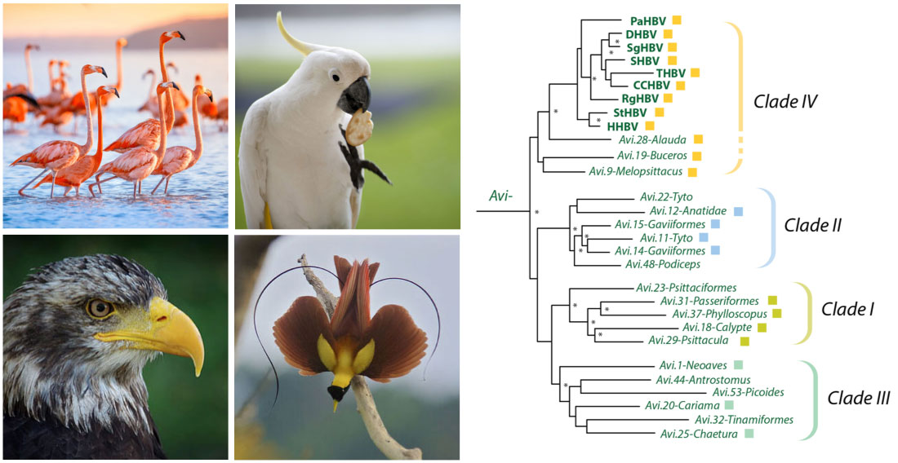
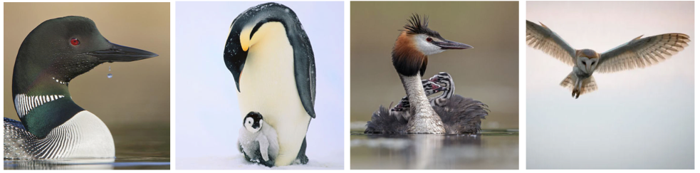
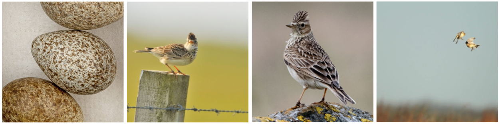
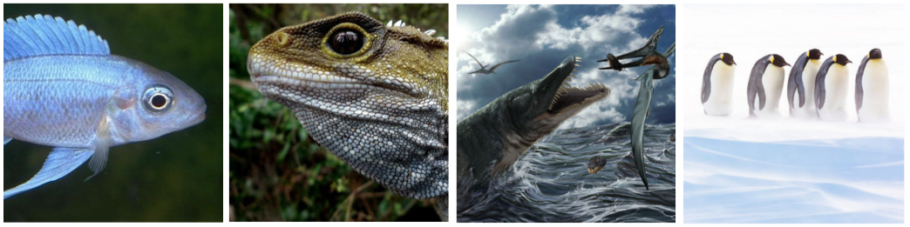

Hepadnaviridae-GLUE: Highlights
These highlights pages aim to provide a brief overview of selected data items contained within the Hepadnaviridae-GLUE project, and to illustrate how it can be used to implement reproducible comparative analyses.
Avi.1-Neoaves
eHBV-Avi.1-Neoaves was the first hepadnavirus-derived EVE to be described (Katzourakis and Gifford, 2010; Suh et al, 2013). It is located in an intron of the FRY Microtubule Binding Protein gene and derives from a germline incorporation event involving an ancient avihepadnavirus. This event predates the divergence of the avian clade Neoaves, which includes all modern birds except the Galloanserae (ducks and chickens) and Palaeognathae. Consequently, an Avi.1-Neoaves insertions are present in multiple avian species.

Left panel: the clade 'Neoaves' includes almost all modern birds, including (clockwise) flamingos (order Phoenicopteriformes), parrots (order Psittaciformes), songbirds (order Passeriformes) and all birds of prey. Right panel: Analysis using Hepadnaviridae-GLUE has revealed that at least four distinct clades (I-IV) of avihepadnavirus have existed during hepadnavirus evolution.
Links to related data items:
- eHBV-Avi.1-Neoaves nucleotide consensus sequences
- Avihepadnaviridae phylogeny with EVEs
- Avian phylogeny (part 1) (taken from Prun et al)
- Avian phylogeny (part 2) (taken from Prun et al)
Avi.14-Gavia and Avi.15-Gavia
These two eHBV loci in the genome of the common loon (Gavia immer) derive from germline incorporation events involving ancient avihepadnaviruses. The viruses involved belong to a characteristic lineage, which we've labeled 'clade II'. So far these viruses are only known from eHBV sequences, and it remains unknown whether any modern representatives still circulate in birds.

Left to right: (i) The common loon (Gavia immer) contains two eHBV insertions derived from clade II aviheapdnaviruses. (ii) Emperor penguins also contain clade II avihepadnaviruses, indicating their biogeographic host range could extend to the Antarctic; eHBV insertions derived from clade II were also identified in (iii) Great crested grebe (Podiceps cristatus) and; (iv) barn owl (Tyto alba)
The two insertions are similar in that they both span near-complete hepadnaviral genomes. Remarkably, however, they appear to have been acquired in entirely different germline integration events. In our recent paper we show that - consistent with this - both insertions show a greater degree of divergence in a region of the Surface protein associated with binding to host receptors than they do in other genomic regions.
Links to related data items:
- Avi.14-Gavia nucleotide sequence
- Avi.15-Gavia nucleotide sequence
- Similarity plots comparing clade II eHBV sequences
Avi.27-Phalacrocoracidae
Avi.27-Phalacrocoracidae is a multicopy eHBV lineage. We identified approximately 300 copies of this avihepadnavirus derived element in the cormorant germline. All of these elements are quite short, spanning around 350 nucleotides of the polymerase gene. Analysis of flanking DNA regions suggested that the insertion has been mobilised within the cormorant germline by transposable elements (TEs).
Cormorants have many anatomical and physiological adaptations for diving, including amphibious hearing. Left to right: (i) and (ii) Great cormorant (Phalacrocorax carbo); (iii) Brandt's cormorant (Phalacrocorax penicillatus); (iv) Cormorant fishing is a traditional fishing method in which fishermen use trained cormorants to fish in rivers. Historically, cormorant fishing has taken place in Japan and China, as well as some European countries.
Phylogenies indicate that the initial germline incorporation event that gave rise to this multicopy eHBV lineage predates the diversification of cormorants. How did so many distinct eHBV/TE insertions get fixed in the cormorant germline? Possibly, the capture of EVE sequences offered a selective advantage to TE lineages that allowed them to proliferate so widely that numerous copies were fixed only by chance. Alternatively, TE sequences containing hepadnavirus-derived DNA might, for some reason, be more likely to be fixed.
Numerous lines of evidence indicate that TEs play a role in rewiring gene regulatory networks. This process may well underlie many of the evolutionary adaptations seen in vertebrates. One possible explanation for the fixation of so many eHBV-avi.28 copies in cormorants might be if they, or the TEs they are embedded within, have played a role in facilitating the adaptation of these birds during their evolution.
Links to related data items:
Avi.28-Alauda
We identified a full-length insertion in the Eurasian skylark (Alauda arvensis) genome that shows a higher level of relatedness to modern hepadnaviruses than does any previously reported eHBV. All extant avihepadnaviruses fall into one subgroup (which we labeled 'IV' in our study). Avi.28.Alauda groups as a basal member of this clade.

Eurasian skylark (Alauda arvensis)
Links to related data items:
Meta.1-Sauria
Meta.1.Sauria is - we think - the oldest EVE ever described. We identified putatively orthologous copies in a lizard - the tuatara (Sphenodon) - as well as in multiple avian species. This implies that germline integration occurred prior to the divergence of these lineages in the late Paleozoic Era (~300 million years ago).
This insertion also provides important new insights into the evolution of hepadnaviruses. It belongs to the recently described Metahepadnavirus genus. So far, metahepadnaviruses have only been identifiied in fish. Unexpectedly, these fish viruses were found to group relatively closely with mammalian hepadnaviruses (genus Orthohepadnavirus). This seemed to imply a transfer of viruses between fish and mammals!

Metahepadnaviruses are a recently discovered group of hepadnaviruses left to right: (i) White sucker ( ) - one of the fish species in which metahepadnaviruses were first identfied; (i) eHBVs derived from metahapadnaviruses were identified in the tuatara (Sphenodon punctatus) - a highly divergent reptile; (iii) Tuataras are the only surviving representatives of the ancient reptile lineage that contained the marine ichthyosaurs and pleisiosaurs; (iv) Meta.1-Sauria insertions have also been preserved in some avian genomes. Emperor penguins contain a relatively well-preserved ortholog.
Raw data in tabular format are can be found at the following links/directories:
Related Publications
Lytras S, Arriagada G, and RJ Gifford
(2020)
Ancient evolution of hepadnaviral paleoviruses and their impact on host genomes.
Virus Evolution
[view]
Larsen ON, Wahlberg M, and J. Christensen-Dalsgaard
(2020)
Amphibious hearing in a diving bird, the great cormorant (Phalacrocorax carbo sinensis).
J Exp Biol.
[view]
Suh A, Brosius J, Schmitz J, and JO Kriegs.
(2013)
The genome of a Mesozoic paleovirus reveals the evolution of hepatitis B viruses.
Nat Commun.
[view]
Katzourakis A. and RJ. Gifford
(2010)
Endogenous viral elements in animal genomes.
PLoS Genetics
[view]